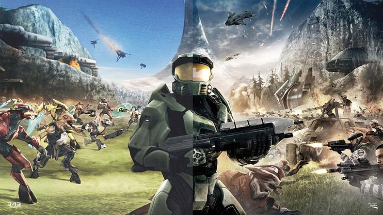

action/adventure
Halo: Combat Evolved
یک بازی ویدئویی علمی-تخیلی تیراندازی اول شخص است که توسط استودیوی Bungie ساخته شده است که یکی از شرکت های تابعه Microsoft Game Studios بود. هیلو: نبرد تکامل، یک بازی شوتر است که در آن بازیکنان تقریباً از دید اول شخص (FPS) گیم پلی را در یک محیط سه بعدی تجربه می کنند. بازیکن می تواند به اطراف حرکت کند و به بالا، پایین، چپ یا راست نگاه کند. این بازی دارای وسایل نقلیه است، از زره پوش 4 × 4 و تانک گرفته تا هاور کرافت بیگانه و هواپیما، که بسیاری از آنها توسط بازیکن کنترل می شوند.
mortal kombat
بازی Mortal Kombat یکی از بازیهای ماندگار و خاطره انگیز از شرکت Warner Bros. International Enterprises در سبک اکشن است . که کمتر کسی پیدا میشود بازی زیبا مورتال کمبات را بازی نکرده باشد . در سری جدید بازی Mortal Kombat مورتال کمبات مسابقات و داستان بازی ۲۵ سال بعد از اولین مورتال کمبات اتافاق میفتد و باید تیم سه نفره خود را از بین بازیکنان قدیمی مانند SubZero – Reptile – Johnny Cage- Rayden – Smoke – Kitana شروع کنید و با هر بار برنده شدن بازیکنان جدید را باز کنید – قدرت – خصوصیات – لباس ها – سلاح های بازیکن مورد علاقه خود را ارتقا بدهید
super mario
بازی قارچ خور قدیمی اصلی سوپر ماریو داستان لوله کشی است که وارد ماجراجویی جذابی می شود. این بازی خاطره انگیز و نوستالژیک است.
SERIOUS SAM
سری بازی Serious Sam از محبوب ترین بازیهای اکشن اول شخص است که اولین نسخه آن سال 2001 روانه بازار شد و با استقبال بسیار خوبی مواجه شده است . 3 سال پس از عرضه شماره اول Serious Sam شماره دوم آن روانه بازار شد که موفقیتی بزرگتر از شماره اول را برای این عنوان کسب کرد . سال 2011 کمپانی Devolver Digital ویرایشی با کیفیت HD از نسخه دوم Serious Sam با نام The Second Encounter منتشر کرده که در آن گرافیک پیشرفت بسیار زیادی نسبت به نسخه اصلی داشته و سلاحها و آیتمهایی اضافه تر از نسخه اصلی را درون خود جای داده .